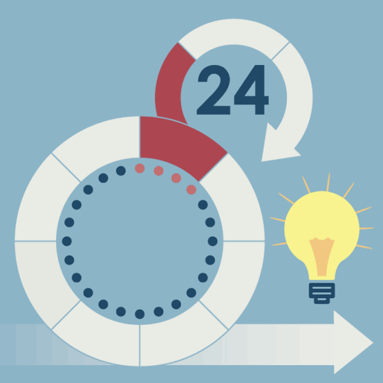

Formación Técnica
Actualmente me formo en Desarrollo de Software en Campuslands, con énfasis en backend, estructuras de datos, POO y diseño de aplicaciones web. Complementado con el título de Bachiller Técnico Empresarial Bilingüe.
Todo éxito es posible
si se actúa con perseverancia
Bachiller Técnico Empresarial Bilingüe y estudiante de Desarrollo de Software en Campuslands. Construyo sistemas backend limpios y escalables con Java, Python y MySQL. Apasionado por la arquitectura MVC, los principios SOLID y la mejora continua.
Un desarrollador apasionado por el backend, los sistemas bien estructurados y el trabajo en equipo bajo metodologías ágiles.
Actualmente me formo en Desarrollo de Software en Campuslands, con énfasis en backend, estructuras de datos, POO y diseño de aplicaciones web. Complementado con el título de Bachiller Técnico Empresarial Bilingüe.

Experiencia trabajando bajo SCRUM en equipos multidisciplinarios, gestionando historias de usuario, sprints y participando en procesos iterativos de desarrollo con feedback continuo.

Sólido manejo de patrones de diseño MVC, principios SOLID, arquitectura en capas (DAO, lógica, vistas), manejo de colecciones, excepciones, JDBC y Stream API en Java.
Certificado con nivel B1 Cambridge PET en inglés. Capacidad de leer documentación técnica en inglés, participar en entornos de trabajo internacionales y seguir estándares globales de desarrollo.
Programa intensivo de formación en desarrollo de software con énfasis en backend. Cubre Python, Java, MySQL, JDBC, HTML, CSS, JavaScript, Web Components, SCRUM y buenas prácticas de arquitectura de software.
Formación técnica con enfoque bilingüe, énfasis en liderazgo, gestión empresarial y comunicación en inglés. Nivel certificado B1 Cambridge PET.
Tecnologías con las que construyo soluciones backend sólidas y frontends funcionales.
Sistemas construidos con arquitecturas limpias y tecnologías reales.
¿Tienes un proyecto en mente o quieres conocer más sobre mi trabajo? Estoy disponible para nuevas oportunidades.
Soy Juan Sebastián Toscano Duarte, Junior Backend Developer con base en Bucaramanga, Colombia. Me interesa trabajar en equipos que valoren la calidad del código y el aprendizaje continuo.
Centro principal de mis repositorios, proyectos y contribuciones. Código limpio, commits descriptivos y arquitecturas bien pensadas.
Explorar Repositorios